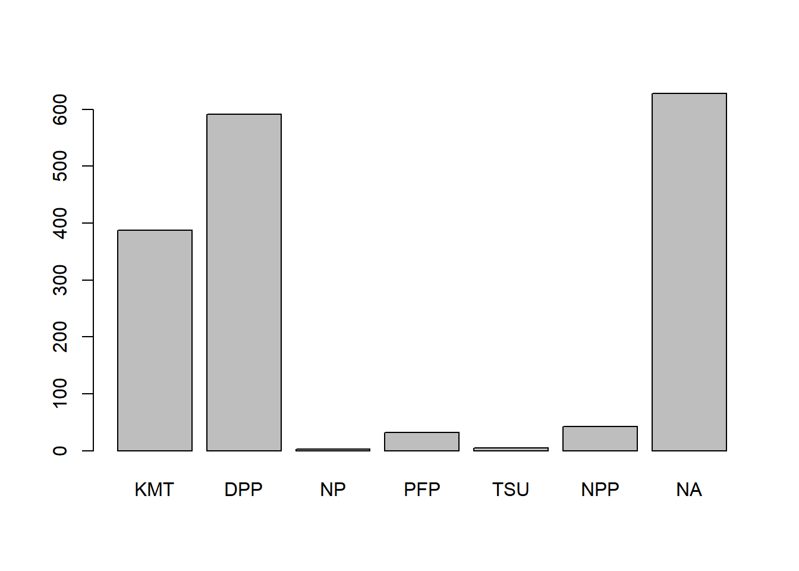
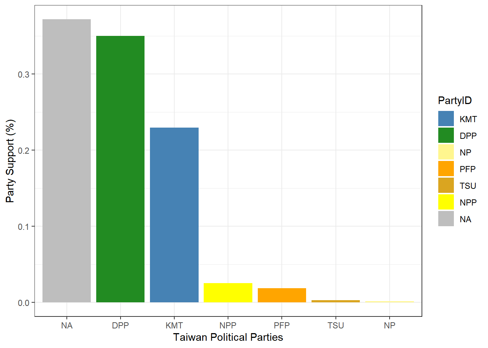

library(haven)Warning: package 'haven' was built under R version 4.4.3TEDS_2016 <- haven::read_dta("https://github.com/datageneration/home/blob/master/DataProgramming/data/TEDS_2016.dta?raw=true")Website for Assignment1
Warning: package 'haven' was built under R version 4.4.3# A tibble: 6 × 54
District Sex Age Edu Arear Career Career8 Ethnic Party
<dbl+lbl> <dbl+l> <dbl+l> <dbl+l> <dbl+l> <dbl+l> <dbl+l> <dbl+l> <dbl+lb>
1 201 [Yi Lan … 2 [Fem… 4 [50-… 4 [Col… 1 [Tai… 1 [Hig… 1 [Civ… 1 [Tai… 25 [Neu…
2 201 [Yi Lan … 2 [Fem… 2 [30-… 5 [Abo… 1 [Tai… 2 [Low… 3 [CLE… 2 [Bot… 25 [Neu…
3 201 [Yi Lan … 1 [Mal… 5 [Abo… 5 [Abo… 1 [Tai… 1 [Hig… 1 [Civ… 2 [Bot… 3 [Lea…
4 201 [Yi Lan … 1 [Mal… 4 [50-… 2 [Jun… 1 [Tai… 4 [WOR… 4 [Lab… 1 [Tai… 25 [Neu…
5 201 [Yi Lan … 2 [Fem… 5 [Abo… 1 [Bel… 1 [Tai… 3 [FAR… 5 [FAR… 9 [Nor… 25 [Neu…
6 201 [Yi Lan … 2 [Fem… 5 [Abo… 2 [Jun… 1 [Tai… 2 [Low… 7 [Hou… 1 [Tai… 6 [Som…
# ℹ 45 more variables: PartyID <dbl+lbl>, Tondu <dbl+lbl>, Tondu3 <dbl+lbl>,
# nI2 <dbl+lbl>, votetsai <dbl>, green <dbl>, votetsai_nm <dbl>,
# votetsai_all <dbl>, Independence <dbl>, Unification <dbl>, sq <dbl>,
# Taiwanese <dbl>, edu <dbl>, female <dbl>, whitecollar <dbl>,
# lowincome <dbl>, income <dbl>, income_nm <dbl>, age <dbl>, KMT <dbl>,
# DPP <dbl>, npp <dbl>, noparty <dbl>, pfp <dbl>, South <dbl>, north <dbl>,
# Minnan_father <dbl>, Mainland_father <dbl>, Econ_worse <dbl>, … District Sex Age Edu Arear
Min. : 201 Min. :1.000 Min. :1.0 Min. :1.000 Min. :1.000
1st Qu.:1401 1st Qu.:1.000 1st Qu.:2.0 1st Qu.:2.000 1st Qu.:1.000
Median :6406 Median :1.000 Median :3.0 Median :3.000 Median :3.000
Mean :4661 Mean :1.486 Mean :3.3 Mean :3.334 Mean :2.744
3rd Qu.:6604 3rd Qu.:2.000 3rd Qu.:5.0 3rd Qu.:5.000 3rd Qu.:4.000
Max. :6806 Max. :2.000 Max. :5.0 Max. :9.000 Max. :6.000
Career Career8 Ethnic Party
Min. :1.000 Min. :1.000 Min. :1.000 Min. : 1.00
1st Qu.:1.000 1st Qu.:2.000 1st Qu.:1.000 1st Qu.: 5.00
Median :2.000 Median :4.000 Median :1.000 Median : 7.00
Mean :2.683 Mean :3.811 Mean :1.658 Mean :13.02
3rd Qu.:4.000 3rd Qu.:5.000 3rd Qu.:2.000 3rd Qu.:25.00
Max. :5.000 Max. :8.000 Max. :9.000 Max. :26.00
PartyID Tondu Tondu3 nI2
Min. :1.000 Min. :1.000 Min. :1.000 Min. : 1.00
1st Qu.:2.000 1st Qu.:3.000 1st Qu.:2.000 1st Qu.: 1.00
Median :2.000 Median :4.000 Median :2.000 Median : 3.00
Mean :4.522 Mean :4.127 Mean :2.667 Mean :35.13
3rd Qu.:9.000 3rd Qu.:5.000 3rd Qu.:3.000 3rd Qu.:98.00
Max. :9.000 Max. :9.000 Max. :9.000 Max. :98.00
votetsai green votetsai_nm votetsai_all
Min. :0.0000 Min. :0.0000 Min. :0.0000 Min. :0.0000
1st Qu.:0.0000 1st Qu.:0.0000 1st Qu.:0.0000 1st Qu.:0.0000
Median :1.0000 Median :0.0000 Median :1.0000 Median :1.0000
Mean :0.6265 Mean :0.3781 Mean :0.6265 Mean :0.5478
3rd Qu.:1.0000 3rd Qu.:1.0000 3rd Qu.:1.0000 3rd Qu.:1.0000
Max. :1.0000 Max. :1.0000 Max. :1.0000 Max. :1.0000
NA's :429 NA's :429 NA's :248
Independence Unification sq Taiwanese
Min. :0.0000 Min. :0.0000 Min. :0.0000 Min. :0.0000
1st Qu.:0.0000 1st Qu.:0.0000 1st Qu.:0.0000 1st Qu.:0.0000
Median :0.0000 Median :0.0000 Median :1.0000 Median :1.0000
Mean :0.2888 Mean :0.1225 Mean :0.5172 Mean :0.6272
3rd Qu.:1.0000 3rd Qu.:0.0000 3rd Qu.:1.0000 3rd Qu.:1.0000
Max. :1.0000 Max. :1.0000 Max. :1.0000 Max. :1.0000
edu female whitecollar lowincome
Min. :1.000 Min. :0.0000 Min. :0.0000 Min. :1.000
1st Qu.:2.000 1st Qu.:0.0000 1st Qu.:0.0000 1st Qu.:4.000
Median :3.000 Median :0.0000 Median :1.0000 Median :5.000
Mean :3.301 Mean :0.4864 Mean :0.5373 Mean :4.343
3rd Qu.:5.000 3rd Qu.:1.0000 3rd Qu.:1.0000 3rd Qu.:5.000
Max. :5.000 Max. :1.0000 Max. :1.0000 Max. :5.000
NA's :10
income income_nm age KMT
Min. : 1.000 Min. : 1.000 Min. : 20.00 Min. :0.0000
1st Qu.: 3.000 1st Qu.: 2.000 1st Qu.: 35.00 1st Qu.:0.0000
Median : 5.500 Median : 5.000 Median : 49.00 Median :0.0000
Mean : 5.324 Mean : 5.281 Mean : 49.11 Mean :0.2296
3rd Qu.: 7.000 3rd Qu.: 8.000 3rd Qu.: 61.00 3rd Qu.:0.0000
Max. :10.000 Max. :10.000 Max. :100.00 Max. :1.0000
NA's :330
DPP npp noparty pfp
Min. :0.0000 Min. :0.00000 Min. :0.0000 Min. :0.00000
1st Qu.:0.0000 1st Qu.:0.00000 1st Qu.:0.0000 1st Qu.:0.00000
Median :0.0000 Median :0.00000 Median :0.0000 Median :0.00000
Mean :0.3497 Mean :0.02544 Mean :0.3716 Mean :0.01893
3rd Qu.:1.0000 3rd Qu.:0.00000 3rd Qu.:1.0000 3rd Qu.:0.00000
Max. :1.0000 Max. :1.00000 Max. :1.0000 Max. :1.00000
South north Minnan_father Mainland_father
Min. :0.0000 Min. :0.0000 Min. :0.0000 Min. :0.0000
1st Qu.:0.0000 1st Qu.:0.0000 1st Qu.:0.0000 1st Qu.:0.0000
Median :0.0000 Median :0.0000 Median :1.0000 Median :0.0000
Mean :0.4947 Mean :0.4799 Mean :0.7225 Mean :0.1024
3rd Qu.:1.0000 3rd Qu.:1.0000 3rd Qu.:1.0000 3rd Qu.:0.0000
Max. :1.0000 Max. :1.0000 Max. :1.0000 Max. :1.0000
Econ_worse Inequality inequality5 econworse5
Min. :0.0000 Min. :0.0000 Min. :1.000 Min. :1.000
1st Qu.:0.0000 1st Qu.:1.0000 1st Qu.:4.000 1st Qu.:3.000
Median :1.0000 Median :1.0000 Median :5.000 Median :4.000
Mean :0.5544 Mean :0.9355 Mean :4.495 Mean :3.644
3rd Qu.:1.0000 3rd Qu.:1.0000 3rd Qu.:5.000 3rd Qu.:4.000
Max. :1.0000 Max. :1.0000 Max. :5.000 Max. :5.000
Govt_for_public pubwelf5 Govt_dont_care highincome
Min. :0.0000 Min. :1.000 Min. :0.0000 Min. :0.0000
1st Qu.:0.0000 1st Qu.:2.000 1st Qu.:0.0000 1st Qu.:0.0000
Median :0.0000 Median :3.000 Median :0.0000 Median :1.0000
Mean :0.4249 Mean :2.877 Mean :0.4988 Mean :0.5765
3rd Qu.:1.0000 3rd Qu.:4.000 3rd Qu.:1.0000 3rd Qu.:1.0000
Max. :1.0000 Max. :5.000 Max. :1.0000 Max. :1.0000
NA's :330
votekmt votekmt_nm Blue Green No_Party
Min. :0.0000 Min. :0.0000 Min. :0 Min. :0 Min. :0
1st Qu.:0.0000 1st Qu.:0.0000 1st Qu.:0 1st Qu.:0 1st Qu.:0
Median :0.0000 Median :0.0000 Median :0 Median :0 Median :0
Mean :0.2053 Mean :0.2752 Mean :0 Mean :0 Mean :0
3rd Qu.:0.0000 3rd Qu.:1.0000 3rd Qu.:0 3rd Qu.:0 3rd Qu.:0
Max. :1.0000 Max. :1.0000 Max. :0 Max. :0 Max. :0
NA's :429
voteblue voteblue_nm votedpp_1 votekmt_1
Min. :0.0000 Min. :0.0000 Min. :0.0000 Min. :0.0000
1st Qu.:0.0000 1st Qu.:0.0000 1st Qu.:0.0000 1st Qu.:0.0000
Median :0.0000 Median :0.0000 Median :1.0000 Median :0.0000
Mean :0.2787 Mean :0.3735 Mean :0.5256 Mean :0.2309
3rd Qu.:1.0000 3rd Qu.:1.0000 3rd Qu.:1.0000 3rd Qu.:0.0000
Max. :1.0000 Max. :1.0000 Max. :1.0000 Max. :1.0000
NA's :429 NA's :187 NA's :187 TEDS_2016$Tondu<-as.numeric(TEDS_2016$Tondu,labels=c("Unification now”,
“Status quo, unif. in future”, “Status quo, decide later", "Status quo
forever", "Status quo, indep. in future", "Independence now”, “No response"))
library(dplyr)
Attaching package: 'dplyr'The following objects are masked from 'package:stats':
filter, lagThe following objects are masked from 'package:base':
intersect, setdiff, setequal, union# A tibble: 7 × 2
Tondu n
<dbl> <int>
1 1 27
2 2 180
3 3 546
4 4 328
5 5 380
6 6 108
7 9 121library(descr)
# Assign label to the values (1=KMT, 2=DPP, 3=NP, 4=PFP, 5=TSU, 6=NPP, 7="NA")
TEDS_2016$PartyID <- factor(TEDS_2016$PartyID, labels=c("KMT","DPP","NP","PFP", "TSU", "NPP","NA"))
freq(TEDS_2016$PartyID)
TEDS_2016$PartyID
Frequency Percent
KMT 388 22.9586
DPP 591 34.9704
NP 3 0.1775
PFP 32 1.8935
TSU 5 0.2959
NPP 43 2.5444
NA 628 37.1598
Total 1690 100.0000Warning: package 'tidyverse' was built under R version 4.4.3Warning: package 'tidyr' was built under R version 4.4.3Warning: package 'purrr' was built under R version 4.4.3Warning: package 'forcats' was built under R version 4.4.3Warning: package 'lubridate' was built under R version 4.4.3── Attaching core tidyverse packages ──────────────────────── tidyverse 2.0.0 ──
✔ forcats 1.0.0 ✔ readr 2.1.5
✔ ggplot2 4.0.2 ✔ stringr 1.5.1
✔ lubridate 1.9.5 ✔ tibble 3.2.1
✔ purrr 1.2.1 ✔ tidyr 1.3.2
── Conflicts ────────────────────────────────────────── tidyverse_conflicts() ──
✖ dplyr::filter() masks stats::filter()
✖ dplyr::lag() masks stats::lag()
ℹ Use the conflicted package (<http://conflicted.r-lib.org/>) to force all conflicts to become errorsTEDS_2016 %>%
count(PartyID) %>%
mutate(perc = n / nrow(TEDS_2016)) -> T2
ggplot(T2, aes(x = reorder(PartyID, -perc),y = perc,fill=PartyID)) +
geom_bar(stat = "identity") +
ylab("Party Support (%)") +
xlab("Taiwan Political Parties") +
theme_bw() +
scale_fill_manual(values=c("steel blue","forestgreen","khaki1","orange","goldenrod","yellow","grey"))